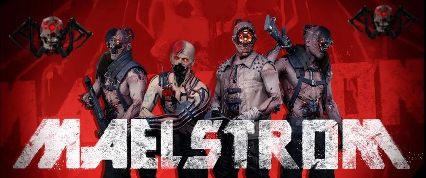

|  | |||||||||
| Anasayfa | Hayvanlar | Kaplan Pençeleri | Valentinolar | Voodoo Oğlanları | Maelstrom | Mox | 6. Cadde | Wraithler | Aldecaldolar |
| Neredeyse ortadan kaldırılmış Metal Warriors çetesinden kalanlarla kuruldu. 2020'lerden beri var olan Maelstrom çetesi üyeleri çoğunlukla Watson bölgesinde ikamet eder. İlk zamanlar çetenin yaklaşık üçte biri sibersaykoydu, yani vücutlarına çok fazla sibernetik parça implant edildiği için mental sağlıkları zarar görmüş kişilerden oluşuyordu. 2077'ye gelindiğinde ise Maelstrom, Night City'deki en tehlike çetelerden biri haline geldi. Artık çetenin neredeyse tamamı implantlara bağımlı halde. Devamlı olarak sibernetik ekipman arayışı içerisinde olmaları ve bunu (hiç ama hiç) kibar bir şekilde yapmamaları onları en tehlikeli çetelerden yapıyor. Agresiftirler, genellikle acımasızdırlar ve aynı zamanda öngörülemezler. İlkel ve tehlikelidirler. Metal Warriors zamanında bir "Şeref Yasası"'na bağlıydı. Liderleri Hammer atıldığında da kurallar geçerliliğini korudu. Ancak artık herkes onlar için düşman. Yaklaşık 1300 üyeye
sahip. Son patron Brick'i görevinden alıp hapseden Royce tarafından yönetilmekte.
Siber yazılımlar, İnternet, okült ve başka bir dünyaya ait hislerin peşinde koşmaktan büyüleniyorlar.
Organizasyonlarını, her biri kendi suç imparatorluğunun farklı bir kısmından sorumlu olan daha küçük gruplara ayırıyorlar. Göreve bağlı olarak, bu gruplar baskınlar, tahrip
veya değerli kargoları korumak için otuz kişi kadar büyük olabilir veya kendi alanlarında devriye geziyorlarsa dört veya beş kişi olabilir.
Maelstromers için ana gelir akışı yasadışı ilaç ve uyuşturucu kaçakçılığından geliyor. Ayrıca, korumalı kurumsal konvoylara karşı iyi planlanmış ve gerçekleştirilmiş soygunlar
gerçekleştirirler.
Bir diğer önemli gelir kaynağı ise Night City'nin en popüler gangster kulübü ve "Drink & Riot" mekanı olan Totentanz kulübüdür. Totentanz, diğer gangerlerin partiye gittiği ve
Maelstrom'un otoritesine ve geleneklerine uydukları sürece neo-death metal müzik dinledikleri terk edilmiş bir fabrikada bulunuyor. Mekanlarında bir gecede ölenlerin sayısı
düzineden azsa, bu berbat ve sıkıcı kabul edilir.
Söylentiler, çetenin karaborsa braindance kayıtlarının - özellikle tuhaf, rahatsız edici ve aşırı şiddet içeren kayıtların yapımında yer aldığını söylüyor. Ürettikleri söylenen
diğer kayıtlar, aşırı uyarılmış BD kullanıcıları arasında oldukça popüler olan, kullanıcıları garip bir zihin durumuna sokan duygusal bir boşluk olan "Uyuşukluk" olarak adlandırılır.
Bu söylentilere rağmen, NCPD(Night City Polis Departmanı), Maelstrom'un BD karaborsasına karıştığını kanıtlayacak hiçbir kanıt bulamadı.
|